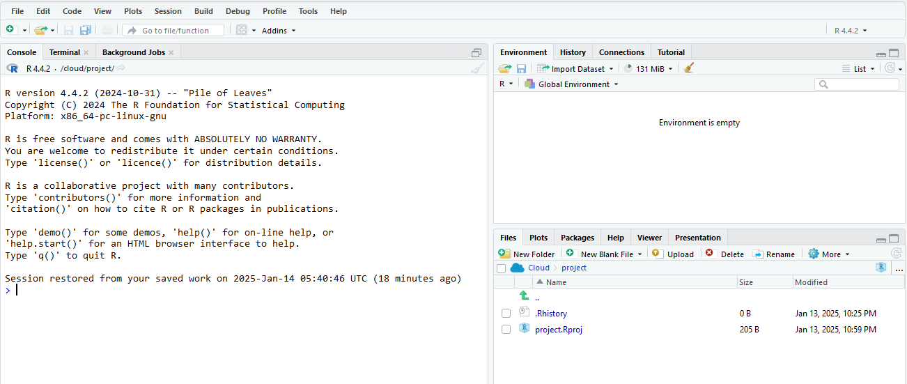
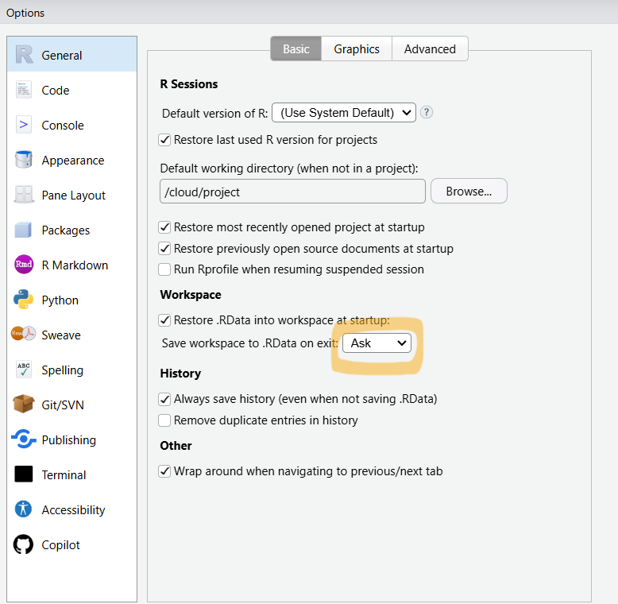

1+11 Introduction to R
Functions introduced in this chapter
<-, c, sum, mean, install.packages, library, ?, ??, View, head, tail, str, NROW, NCOL, summary, $
1.1 Introduction
Welcome to R! This chapter will walk you through everything you need to know to get started using R.
As you go through this chapter (and all future chapters), please read slowly and carefully, and pay attention to detail. Many steps depend on the correct execution of all previous steps, so reading quickly and casually might come back to bite you later.
1.2 What is R?
R is a programming language specifically designed for doing statistics. Don’t be intimidated by the word “programming” though. The goal of this course is not to make you a computer programmer. To use R to do statistics, you don’t need know anything about programming at all. Every chapter throughout the whole course will give you examples of the commands you need to use. All you have to do is use those example commands as templates and make the necessary changes to adapt them to the data you’re trying to analyze.
The greatest thing about R is that it is free and open source. This means that you can download it and use it for free, and also that you can inspect and modify the source code for all R functions. This kind of transparency does not exist in commercial software. The net result is a robust, secure, widely-used language with literally tens of thousands of contributions from R users all over the world.
R has also become a standard tool for statistical analysis, from academia to industry to government. Although some commercial packages are still widely used, many practitioners are switching to R due to its cost (free!) and relative ease of use. After this course, you will be able to list some R experience on your résumé and your future employer will value this. It might even help get you a job!
1.3 RStudio
RStudio is an “Integrated Development Environment,” or IDE for short. An IDE is a tool for working with a programming language that is fancier than just a simple text editor. Most IDEs give you shortcuts, menus, debugging facilities, syntax highlighting, and other things to make your life as easy as possible.
Open RStudio so we can explore some of the areas you’ll be using in the future. (How to do this will depend on whether you’ve installed RStudio on your personal computer or logged into a cloud server. If you are in a class, your teacher will explain how to do this. For local installations, you should just be able to open RStudio. For cloud applications, you may need to start a “New Session” or a “New Project”.)
It should look something like this:

On the left side of your screen, you should see a big pane called the “Console”. There will be some startup text there, and below that, you should see a “command prompt”: the symbol “>” followed by a blinking cursor. (If the cursor is not blinking, that means that the focus is in another pane. Click anywhere in the Console and the cursor should start blinking again.)
A command prompt can be one of the more intimidating things about starting to use R. It’s just sitting there waiting for you to do something. Unlike other programs where you run commands from menus, R requires you to know what you need to type to make it work.
We’ll return to the Console in a moment.
Next, look at the upper-right corner of the screen. There are at least three tabs in this pane starting with “Environment”, “History”, and “Connections”. The “Environment” (also called the “Global Environment”) keeps track of things you define while working with R. There’s nothing to see there yet because we haven’t defined anything! The “History” tab will likewise be empty; again, we haven’t done anything yet. We won’t use the “Connections” tab in this course. (Depending on the version of RStudio you are using and its configuration, you may see additional tabs, but we won’t need them for this course.)
Now look at the lower-right corner of the screen. There are likely six tabs here: “Files”, “Plots”, “Packages”, “Help”, “Viewer”, and “Presentation”. The “Files” tab will eventually contain the files you upload or create. “Plots” will show you the result of commands that produce graphs and charts. “Packages” will be explained later. “Help” is precisely what it sounds like; this will be a very useful place for you to get to know. We will never use the “Viewer” or “Presentation” tabs, so don’t worry about them.
1.4 IMPORTANT!!
There is a setting you need to change for RStudio to work properly for you as you move through assignments in the future. Find the Tools menu (at the top of the screen, between “Profile” and “Help”) and go to the bottom where it says “Global Options…”
In the Workspace section, where it says “Save workspace to .RData on exit”, you must change the drop-down menu from “Ask” to “Never”. The menu is highlighted in the image below:

Be sure to scroll down and click the OK button when you’re done.
1.5 Try something!
So let’s do something in R! Go back to the Console and at the command prompt (the “>” symbol with the blinking cursor), type
and hit Enter.
Congratulations! You just ran your first command in R. It’s all downhill from here. R really is nothing more than a glorified calculator.
Okay, let’s do something slightly more sophisticated. It’s important to note that R is case-sensitive, which means that lowercase letters and uppercase letters are treated differently. Type the following, making sure you use a lowercase x and lowercase c, and hit Enter:
x <- c(1, 3, 4, 7, 9)You have just created a “vector”. When we use the letter c and enclose a list of things in parentheses, we tell R to “combine” those elements. So, a vector is just a collection of data. The little arrow <- says to take what’s on the right and assign it to the symbol on the left. The vector x is now saved in memory. As long as you don’t terminate your current R session, this vector is available to you.
Check out the “Environment” pane now. You should see the vector x that you just created, along with some information about it. Next to x, it says num, which means your vector has numerical data. Then it says [1:5] which indicates that there are five elements in the vector x.
At the command prompt in the Console, type
xand hit Enter. Yup, x is there. R knows what it is. You may be wondering about the [1] that appears at the beginning of the line. To see what that means, try typing this (and hit Enter—at some point here I’m going to stop reminding you to hit Enter after everything you type):
y <- lettersR is clever, so the alphabet is built in under the name letters.
Type
yNow can you see what the [1] meant above? Assuming the letters spilled onto more than one line of the Console, you should see a number in brackets at the beginning of each line telling you the numerical position of the first entry in each new line.
Since we’ve done a few things, check out the “Global Environment” in the upper-right corner. You should see the two objects we’ve defined thus far, x and y. Now click on the “History” tab. Here you have all the commands you have run so far. This can be handy if you need to go back and re-run an earlier command, or if you want to modify an earlier command and it’s easier to edit it slightly than type it all over again. To get an older command back into the Console, either double-click on it, or select it and click the “To Console” button at the top of the pane.
When we want to re-use an old command, it has usually not been that long since we last used it. In this case, there is an even more handy trick. Click in the Console so that the cursor is blinking at the blank command prompt. Now hit the up arrow on your keyboard. Do it again. Now hit the down arrow once or twice. This is a great way to access the most recently used commands from your command history.
Let’s do something with x. Type
sum(x)I bet you figured out what just happened.
Now try
mean(x)What if we wanted to save the mean of those five numbers for use later? We can assign the result to another variable! Type the following and click on the Environment tab to observe the effect.
m <- mean(x)It makes no difference what letter or combination of letters we use to name our variables. For example,
mean_x <- mean(x)just saves the mean to a differently named variable. In general, variable names can be any combination of characters that are letters, numbers, underscore symbols (_), and dots (.). (In this course, we will prefer underscores over dots.) You cannot use spaces or any other special characters in the names of variables.1 You should avoid variable names that are the same words as predefined R functions; for example, we should not type mean <- mean(x).
1.6 Load packages
Packages are collections of commands, functions, and sometimes data that people all over the world write and maintain. These packages extend the capabilities of R and add useful tools. For example, we would like to use the palmerpenguins package because it includes an interesting data set on penguins.
Type the following at the command prompt in the Console:2
install.packages("palmerpenguins")We are doing this because you’ve never used the palmerpenguins package before. Once a package is installed, though, it never has to be installed again.
After we’ve installed the package (the one-time process we completed above), we will need to load the package in every R session in which we want to use it. For example, the palmerpenguins package contains a data set called penguins. Let’s see what happens when we try to access this data set without loading the package that contains it. Typing this will produce an error:
penguinsThat error makes sense because R doesn’t know anything about a data set called penguins.
But since the palmerpenguins package has been installed, you can now type this at the command prompt:
library(palmerpenguins)It didn’t look like anything happened. However, in the background, all the stuff in the palmerpenguins package became available to use.
Let’s test that claim. Hit the up arrow twice and get back to where you see this at the Console (or you can manually re-type it, but that’s no fun!):
penguinsNow R knows about the penguins data, so the last command printed some of it to the Console.
Go look at the “Packages” tab in the pane in the lower-right corner of the screen. Scroll down a little until you get to the “P”s. You should be able to find the palmerpenguins package. You’ll also notice a check mark by it, indicating that this package is loaded into your current R session.
You must use the library command in every new R session in which you want to use a package. If you terminate your R session, R forgets about the package. If you are ever in a situation where you are trying to use a command and you know you’re typing it correctly, but you’re still getting an error, check to see if the package containing that command has been loaded with library. (Many R commands are “base R” commands, meaning they come with R and no special package is required to access them. The set of letters you used above is one such example.)
1.7 Getting help
There are three important ways to get help with R. The first is the obvious “Help” tab in the lower-right pane on your screen. Click on that tab now. In the search bar at the right, type penguins and hit Enter. Take a few minutes to read the help file.
Help files are only as good as their authors. Fortunately, most package developers are conscientious enough to write decent help files. But don’t be surprised if the help file doesn’t quite tell you what you want to know. And for highly technical R functions, sometimes the help files are downright inscrutable. Try looking at the help file for the grep function. Can you honestly say you have any idea what this command does or how you might use it? Over time, as you become more knowledgeable about how R works, these help files get less mysterious.
The second way of getting help is from the Console. Go to the Console and type
?lettersThe question mark tells R you need help with the R command letters. This will bring up the help file in the same Help pane you were looking at before.
Sometimes, you don’t know exactly what the name of the command is. For example, suppose we misremembered the name and thought it was letter instead of letters. Try typing this:
?letterYou should have received an error because there is no command called letter. Try this instead:
??letterand scroll down a bit in the Help pane. Two question marks tell R not to be too picky about the spelling. This will bring up a whole bunch of possibilities in the Help pane, representing R’s best guess as to what you might be searching for. (In this case, it’s not easy to find. You’d have to know that the help file for letters appeared on a help page called base::Constants.)
The third way to get help—and often the most useful way—is to use your best friend, the internet. You don’t want to just type “R” into a search engine. (That’s the downside of using a single letter of the alphabet for the name of a programming language.) However, if you type “R __________” where you fill in the blank with the topic of interest, search engines usually do a pretty good job sending you to relevant pages. Within the first few hits, in fact, you’ll often see an online copy of the same help file you see in R. Frequently, the next few hits lead to StackOverflow where very knowledgeable people post very helpful responses to common questions.
Use a search engine to find out how to take the square root of a number in R. Test out your newly-discovered function on a few numbers in the Console to make sure it works.
1.8 Understanding the data

Let’s go back to the penguins data contained in the penguins data set from the palmerpenguins package.
The first thing we do to understand a data set is to read the help file on it. (We’ve already done this for the penguins data.) Of course, this only works for data files that come with R or with a package that can be loaded into R. If you are using R to analyze your own data, presumably you don’t need a help file. And if you’re analyzing data from another source, you’ll have to go to that source to find out about the data.
When you read the help file for penguins, you may have noticed that it described the “Format” as being “A tibble with 344 rows and 8 variables.” What is a “tibble”?
The word “tibble” is an R-specific term that describes data organized in a specific way. A more common term is “data frame” (or sometimes “data table”). The idea is that in a data frame, the rows and the columns have very specific interpretations.
Each row of a data frame represents a single object or observation. So in the penguins data, each row represents a penguin. If you have survey data, each row will usually represent a single person. But an “object” can be anything about which we collect data. State-level data might have 50 rows and each row represents an entire state.
Each column of a data frame represents a variable, which is a property, attribute, or measurement made about the objects in the data. For example, the help file mentions that various pieces of information are recorded about each penguin, like species, bill length, flipper length, body mass, sex, and so on. These are examples of variables. In a survey, for example, the variables will likely be the responses to individual questions.
We will use the terms tibble and data frame interchangeably in this course. They are not quite synonyms: tibbles are R-specific implementations of data frames, the latter being a more general term that applies in all statistical contexts. Nevertheless, there are no situations (at least not encountered in this course) where it makes any difference if a data set is called a tibble or a data frame.
We can also look at the data frame in “spreadsheet” form. Type
View(penguins)(Be sure you’re using an upper-case “V” in View.) A new pane should open up in the upper-left corner of the screen. In that pane, the penguins data appears in a grid format, like a spreadsheet. The observations (individual penguins) are the rows and the variables (attributes and measurements about the penguins) are the columns. This will also let you sort each column by clicking on the arrows next to the variable name across the top.
Sometimes, we just need a little peek at the data. Try this to print just a few rows of data to the Console:
head(penguins)We can customize this by specifying the number of rows to print. (Don’t forget about the up arrow trick!)
head(penguins, n = 10)The tail command does something similar, but for data from the last few rows.
tail(penguins)When we’re working with HTML documents like this one, it’s usually not necessary to use View, head, or tail because the HTML format will print the data frame a lot more neatly than it did in the Console. You do not need to type the following code; just look below it for the table that appears.
penguinsYou can scroll through the rows by using the numbers at the bottom or the “Next” button. You can scroll through the variables by clicking the little black arrow pointed to the right in the upper-right corner. The only thing you can’t do here that you can do with View is sort the columns.
We want to understand the “structure” of our data. For this, we use the str command. Try it:
str(penguins)This tells us several important things. First it says that we are looking at a data frame with 344 observations of 8 variables. We can isolate those pieces of information separately as well, if needed:
NROW(penguins)NCOL(penguins)These give you the number of rows and columns, respectively.
The str command also tells us about each of the variables in our data set. We’ll talk about these later.
We need to be able to summarize variables in the data set. The summary command is one way to do it:
summary(penguins)You may not recognize terms like “Median” or “1st Qu.” or “3rd Qu.” yet. Nevertheless, you can see why this summary could come in handy.
1.9 Understanding the variables
When we want to look at only one variable at a time, we use the dollar sign to grab it. Try this:
penguins$body_mass_gThis will list the entire body_mass_g column, in other words, the body masses (in grams) of all the penguins in this particular study. If we only want to see the first few, we can use head like before.
head(penguins$body_mass_g)If we want the structure of the variable body_mass_g, we do this:
str(penguins$body_mass_g)Notice the letters int at the beginning of the line. That stands for “integer” which is another word for whole number. In other words, the penguins’ body masses all appear in this data set as whole numbers. There are other data types you’ll see in the future:
num: This is for general numerical data (which can be integers as well as having decimal parts).chr: This means “character”, used for character strings, which can be any sequence of letters or numbers. For example, if the researcher recorded some notes for each penguin, these notes would be recorded in a character variable.factor: This is for categorical data, which is data that groups observations together into categories. For example,speciesis categorical. These are generally recorded like character strings, but factor variables have more structure because they take on a limited number of possible values corresponding to a generally small number of categories. We’ll learn a lot more about factor variables in future chapters.
There are other data types, but the ones above are by far the most common that you’ll encounter on a regular basis.
If we want to summarize only the variable body_mass_g, we can do this:
summary(penguins$body_mass_g)While executing the commands above, you may have noticed entries listed as NA. These are “missing” values. It is worth paying attention to missing values and thinking carefully about why they might be missing. For now, just make a mental note that NA is the code R uses for data that is missing. (This would be the same as a blank cell in a spreadsheet.)
1.10 Projects
Using files in R requires you to be organized. R uses what’s called a “working directory” to find the files it needs. Therefore, you can’t just put files any old place and expect R to be able to find them.
One way of ensuring that files are all located where R can find them is to organize your work into projects.
- If you are using Posit Cloud, you have already created a project. It will say “Untitled project” at the top of the screen.
- Click on the words “Untitled project” and type “intro_stats”. You may skip the next set of bullet points.
- If you are using a local installation of RStudio, look in the far upper-right corner of the RStudio screen. You should see some text that says
Project: (None). This means we are not currently in a project and we need to to create one.- Open the drop-down menu here and select
New Project. When the dialog box opens, selectNew Directory, thenNew Project. You’ll need to give your project a name. In this case, typeintro_statsfor the “Directory name”. Leave everything else alone and clickCreate Project. You will see the screen refresh and R will restart. If everything worked the way it should, creating a new project will create a new folder, put you in that folder, and automatically make it your working directory.
- Open the drop-down menu here and select
In general, project names should be descriptive—they should still remind you in several years what the project was about. The only thing to remember is that project names and file names should not have any spaces in them. In fact, you should avoid other kinds of special characters as well, like commas, number signs, etc. Stick to letters and numerals and you should be just fine. If you want a multi-word project name or file name, I recommend using underscores. R will allow you to name projects with spaces and modern operating systems are set up to handle file names with spaces, but there are certain things that either don’t work at all or require awkward workarounds when file names have spaces.
You will see a file in the Files pane with file extension .Rproj, but you should never touch that file. It’s just for RStudio to keep track of your project details.
Any additional files you need for your project should be placed in this directory. In all future chapters, the first thing you will do is download the chapter file from the book website and place it here in your project folder. If you are using RStudio through a web browser, you’ll need to upload files to your project folder using the “Upload” button in the Files tab. If you have installed R and RStudio on your own machine, you’ll need to navigate your system to find the downloaded file and move or copy it to your project working directory. (It’s likely in a folder called “Downloads”. But if it’s not and you need to find it elsewhere, this is done most easily using File Explorer in Windows and the Finder in MacOS.)
1.11 Conclusion
It is often said that there is a steep learning curve when learning R. This is true to some extent. R is harder to use at first than other types of software. Nevertheless, in this course, we will work hard to ease you over that first hurdle and get you moving relatively quickly. Don’t get frustrated and don’t give up! Learning R is worth the effort you put in. Eventually, you’ll grow to appreciate the power and flexibility of R for accomplishing a huge variety of statistical tasks.
Onward and upward!
The official spec says that a valid variable name “consists of letters, numbers and the dot or underline characters and starts with a letter or the dot not followed by a number.”↩︎
If you get an authorization error, that means you are accessing RStudio through a managed local server and you’ll need your admin to install the package for you.↩︎